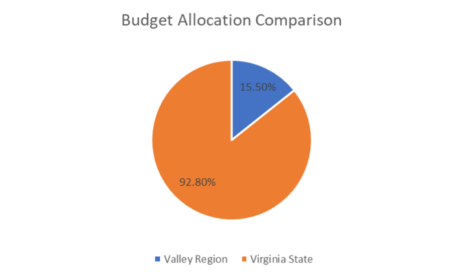

Valley Region
In Roanoke, as in other parts of the state, access to mental health services is a significant concern. According to the 2019 Community Health Needs Assessment for the region, mental health was identified as the top priority health issue by community members. Roanoke residents who need mental health services face long wait times, and many do not receive the care they need due to a lack of resources. In addition, individuals with mental health conditions are disproportionately affected by poverty and other social determinants of health, which can further exacerbate their mental health issues.
 In the Shenandoah Valley, mental health is also a significant concern. According to the Valley Health 2020 Community Health Needs Assessment, mental health was identified as the top priority health issue by community members. The report highlights a shortage of mental health providers in the region, particularly in rural areas. Many individuals in the Shenandoah Valley do not have access to mental health services, which can lead to untreated mental health conditions and higher rates of suicide.
In the Shenandoah Valley, mental health is also a significant concern. According to the Valley Health 2020 Community Health Needs Assessment, mental health was identified as the top priority health issue by community members. The report highlights a shortage of mental health providers in the region, particularly in rural areas. Many individuals in the Shenandoah Valley do not have access to mental health services, which can lead to untreated mental health conditions and higher rates of suicide.
Both regions also face challenges related to substance abuse and addiction. In Roanoke, substance abuse is a significant concern, with rates of drug overdose deaths higher than the state average. The Shenandoah Valley also faces challenges related to substance abuse, particularly in rural areas, where individuals may not have access to treatment and support services.

Overall, Roanoke and the Shenandoah Valley face significant challenges related to mental health, including access to services, workforce shortages, and social determinants of health. Addressing these challenges will require a comprehensive approach that involves increasing funding for mental health programs, improving access to services in underserved areas, and addressing the root causes of mental health issues, including poverty and addiction. By working together to address these challenges, Roanoke and the Shenandoah Valley can create a more equitable and accessible mental health system that provides the support and care that their residents need.